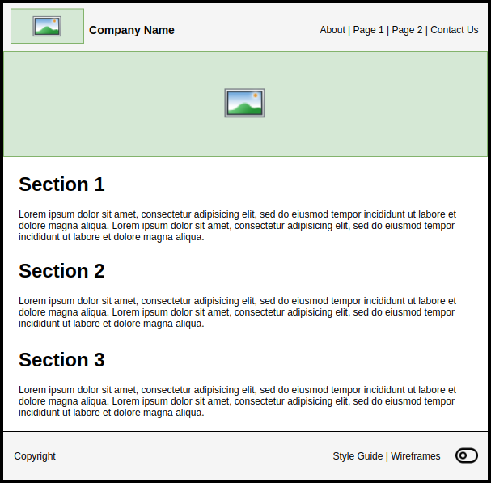
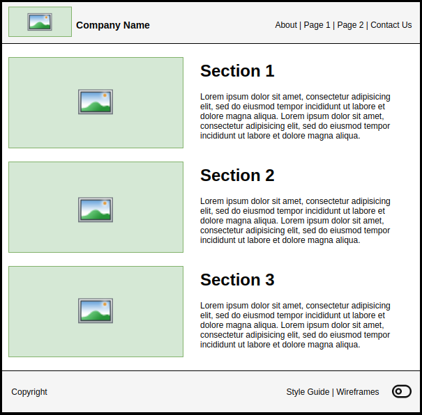

Home Page Wireframe
This week you need to decide what the home page for your final projects website is going to look like. You do not need to create everything from scratch. Your site is going to use a provided template which includes the header and footer already. Your main focus will be how the page content is laid out. Take a look at the following wireframe that demonstrates what the project template looks like:

Assignment:
-
Plan
Plan a design for your sites home page that meets the following criteria. We have provided two examples of wireframes that meet these requirements below:
- Must include 1 image in the pages content.
- Must use at least 3 sections (headings) and include content for each section.
- Must include the header and footer in the wireframe.


Since your final project site will have additional pages it might make sense to reference them on your home page. For example, the first section could be a welcome to the website, the second section could talk about your services, and the third could lead to your contact page. Keep this in mind when your making your wireframe. You do not need all the pages text content or actual images yet, but if you do have resources you should include them in the wireframe so it matches your final website closer.
Make sure to include the header and footer in your wireframe. You can alter the header and footer design to match the same style (colors, fonts, etc.) as your websites wireframe style. Remember that you will be making additional wireframes next week. Keep a copy of the work you make so you can keep the same header and footer design for every wireframe.
-
Create
Using a wireframing tool or drawing application create the wireframe for your home page. The following list shows some of the top drawing and wireframing tools you could use. The first two options are the simplest to use. The remaining options are more advanced and usually require creating a free account:
-
Complete
To prove that you have completed this assignment you will need to submit the home page wireframe you created to Canvas. You must submit an image file and not some other format like
xmlordrawio.Grading
Submit your home page wireframe as a
jpg,jpeg,svg, orpngimage to this assignment in Canvas.